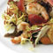
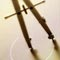

Science - AAAS
Daily News RSS
Thursday 23 May 3:00 p.m. EDT
Live Video Chat: Does 'Psychiatry's Bible' Need to Be Rewritten?
-
 20 May 2013 | ScienceNOWFriendly Viruses Protect Us Against Bacteria
20 May 2013 | ScienceNOWFriendly Viruses Protect Us Against Bacteria
- Viruses in mucus may be important line of defense against disease
-
 20 May 2013 | ScienceNOWScienceShot: Why Most Snails Coil to the Right
20 May 2013 | ScienceNOWScienceShot: Why Most Snails Coil to the Right
- Researchers uncover evolutionary explanation for lack of "lefties"
-
 20 May 2013 | ScienceNOWWhy Penguins Don't Fly
20 May 2013 | ScienceNOWWhy Penguins Don't Fly
- Study of penguin look-alike reveals advantages to being a ground-based bird
-
 20 May 2013 | ScienceNOWUptick in Whooping Cough Linked to Subpar Vaccines
20 May 2013 | ScienceNOWUptick in Whooping Cough Linked to Subpar Vaccines
- Newer shots are safer, but not as effective as older ones
-  17 May 2013 | NEWS FOCUS Following the Flavor
- Scientists are beginning to unravel why we love some types of food and hate others. It's a vastly more complex topic than they once thought
Science Careers RSS
-  17 May 2013 | TOOLING UP It's Not Always the Best and Brightest (Part 2)
- Often, those who get noticed are those who get hired.
- 13 May 2013 | DATA DELUGE When All Science Becomes Data Science
- As traditional disciplines become more data-focused, traditional scientists need to become more "pi-shaped."
- 10 May 2013 | ISSUES & PERSPECTIVES Careers in Fast-Forward, Part 2
- Institutional fellowships offer recent Ph.D.s the chance to leap right into running their own labs.
- 14 May 2013 | Diversity Issues In Science, Grad School Indebtedness Varies by Race, Study Finds
- In scientific fields, graduate school debt is higher for minorities than it is for whites.
Science RSS
17 May 2013, Vol. 340, #6134
-
EcologyLadybug Invaders Carry Bioweapons
-
News FocusTroubled Waters for Ancient Shipwrecks
-
GeochemistryBetter Water Monitoring Needed Near Shale Gas Development
-
Molecular BiologyHow Histone Mutations Help Some Cancers Spread
-
Applied Physics3D Computational Imaging From Single-Pixel Detectors
Science Signaling RSS
-
NEUROSCIENCEStopping the Pain
-
IMMUNOLOGYMaintaining a Balanced Response
Science Translational Medicine RSS
-
INFERTILITYA New Drug That Preserves Fertility
-
CANCER IMMUNOTHERAPYVaccinia Virus Induces Cancer Cell Lysis
Science Podcast
17 May 2013
Listen to stories on fracking, troubling science software, the science of taste, and more. (44:46)
Blogs and Communities
The Science family of sites is published by the nonprofit AAAS, whose mission is to advance science and serve society worldwide. Find out more at www.aaas.org
Help and Resources
Asian Gateways:


© 2013 American Association for the Advancement of Science. All Rights Reserved.
AAAS is a partner of HINARI, AGORA, OARE, PatientInform, CrossRef, and COUNTER.